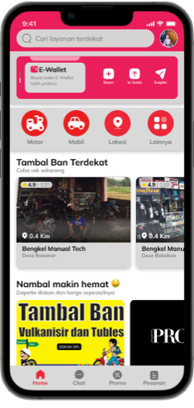
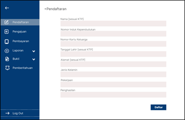

I am currently pursuing my education in the third semester of college. I am enrolled in the D4 Computer Engineering program.
Saya adalah individu yang bersemangat dan berkomitmen untuk meraih kesuksesan dalam kehidupan pribadi dan profesional. Dengan latar belakang Pendidikan Teknik Informatika dan sempat menjadi Juara 3 Nasional di bidang pengembangan perangkat lunak, saya telah membangun fondasi kuat dalam bidang saya.
Saya memiliki tekad untuk mencapai tujuan saya dan berusaha untuk menjadikan setiap langkah dalam perjalanan hidup ini sebagai kesempatan untuk belajar dan tumbuh. Saya selalu bersemangat untuk menghadapi tantangan baru, berkolaborasi dengan orang-orang yang inspiratif, dan berkontribusi pada kesuksesan tim atau organisasi. Terima kasih telah meluangkan waktu untuk memahami sedikit tentang saya. Saya sangat berharap untuk dapat berkontribusi pada proyek atau tim Anda dan terlibat dalam perjalanan menuju pencapaian tujuan bersama.
|
|
Nama: Nur Afifah Uswatun Khasanah TTL: Tegal, 22 Juni 2003 Alamat: Desa Dukuhwringin, Kecamatan Slawi Riwayat Pendidikan:
|
|
|

Disamping adalah projek pembuatan aplikasi Jasa Tambal Ban yang saya beri nama "KEMPHEZZ". Projek ini merupakan projek UAS mata kuliah Interaksi Manusia dan Komputer yang diampu oleh Bu Dwi Intan Af'idah M.Kom.

Disampinng adalah projek pembuatan aplikasi untuk Badan Kredit Desa di Desa Dukuhwringin yang saya beri nama "SETORZZZZ". Projek ini merupakan projek UAS Mata Kuliah Analisis Desain Perangkat Lunak yang diampu Bapak Ginanjar Wiro Sasmito M.kom. |
|
|
A. Materi Tentang Tips meniti karir dibidang teknologi
B. Materi Tentang PT IVATAMA TEKNOLOGI COMPANY PROFIL 2022
Materi ini menjelaskan tentang Penawaran Layanan Profesional,dimana di dalam nya mempunyai 4 macam,yaitu:
1. Pengembangan Aplikasi |
Juara 3 Gemastik Tingkat Nasional
Pembawa Acara Seminar InvoFest 2023
Anggota KPR 2023
Instagram: Instagram.com/afifahhffi_
Email: nurafifahuswatunkh@gmail.com